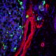
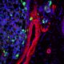

The Centre for Cell Imaging at the University of Liverpool
The Liverpool Centre for Cell Imaging (CCI) is a world-class resource for light microscopy based in the Biosciences building at the University of Liverpool. We support our users through the whole research cycle and have expertise in a range of techniques including:
- Widefield Imaging (including DIC, polarised light and phase)
- Laser Scanning and Spinning Disk Confocal Microscopy
- Multimode confocal/TIRF/Atomic Force Microscopy
- Lightsheet Imaging
- Multiphoton & Second Harmonic Generation
- Super-resolution imaging
- ...and much more
On this site, you can find out more about our facility, the equipment we have available and see some of the images and movies created at the facility. There is also information for new and existing users and don't forget to get in touch if we can be of assistance.
Focus on...
NETs

Neutrophils are specialised white blood cells (leukocytes) that can extrude their DNA to form Neutrophil Extracellular Traps (NETs). These structures can capture and kill pathogens. The group of Helen Wright from the Institite of Ageing and Chronic Disease used the equipment and expertise at the facility to image and analyse the formation of NETs in response to a range of stimuli.
The work was published in Frontiers in 2019
Kidney Organoids

3D culture systems are becoming popular for a range of studies including development, cancer cell migration and disease. Marie Held (from the Lévy group) have developed a system for embryonic kidney re-aggregation, the results of which can be imaged on the Lightsheet microscope.
The work was published in PLOS One in 2018
Atomic Force Microscopy

Carboxysomes are bacterial organelles that enhance the efficiency of carbon fixation in cyanobacteria. The group of Dr Luning Liu utilised the BioAFM in the facility to study both the fluorescence and topology of carboxysomes in real time.
The work was published in Nanoscale in 2017
Glial Tumours

Drosophila are regularly used in research to study the effect of genes on development. In this paper, the Bennett lab show the effect of cooperation between two oncogenes by co-overexpression studying whole Drosophila brains using the 710 Microscope.
The work was published in Oncogene in 2017
Gels

Materials that can be made to solidify under certain circumstances are highly useful for industrial and medical applications. In this study the Adams group demonstrated a single substance that could be made to gel under three different conditions, each leading to different mechanical properties. The study utilised the Multiphoton microscope to study the structure of the gels.
The work was published in Soft Matter in 2017
Quantum Dots

Hit most fluorophores with too much light and they suffer from irreversible damage which makes them 'invisible'. Not so for Quantum Dot (QDot) nanocrystals which are immune to this photobleaching. Far from being the ideal label however, Jennifer Francis from the Lévy Lab found that many structures were not amenable to labelling with QDots when visualised using the Epifluorescent microscope.
The work was published in Beilstein Journal of Nanotechnology in 2017
Nuclear Speckles

In cells, transcription factors are responsible for translating sensed signals into the regulation of genes. The group of Violaine Sée study how cells respond to low oxygen levels through the action of Hypoxia Inducible Factors (HIFs). In this paper, HIF-2α is shown to localise in semi-mobile nuclear 'speckles' when imaged on the LSM 780 over time.
The work was published in Royal Society Open Biology in 2016
Muscular Dystrophy

Duchenne muscular dystrophy (DMD) is a progressive muscle wasting disease. The Pisconti group are studying DMD with a special focus on the regenerative potential of stem cells and how neutrophil-mediated inflamation excacerbates the disease.
In this work, myotube fusion and differentiation were automatically analysed with the help of the CCI's Technical Specialist in Image Analysis.
The work was published in Scientific Reports in 2016
FRAP

Fluorescence Recovery After Photobleaching (FRAP) is an incredibly powerful technique to assess the dynamics of fluorescent proteins. In this paper the Fernig group used the LSM 780 to photobleach surface-bound growth factors and follow their reoovery by exchange or lateral diffusion.
Importantly, this type of experiment uncovers the kinetics of molecules' binding and diffusion behaviour at the cell surface.
The work was published in Royal Society Open Biology in 2016
Tracking
Life exists in the temporal dimension. There are many reasons why you might want to track the movement of objects over time, for example, to measure changes in intensity, speed of motion or to count divisions in moving cells.
If you're interested in tracking objects over time, get in touch with the CCI staff who can help you with experimental design, acquisition and image analysis.
Porous Organic Cages

Transmission Electron Microscopy (TEM) is a fantastic technique for high resolution imaging, however certain types of materials cannot be differentiated from each other.
To supplement their TEM imaging, the Cooper group used Confocal Laser Scanning Microscopy (CLSM) at the CCI to study the morphology of Core-Shell crystals.
The work was published in Angewandte Chemie in 2018
© Liverpool Centre for Cell Imaging